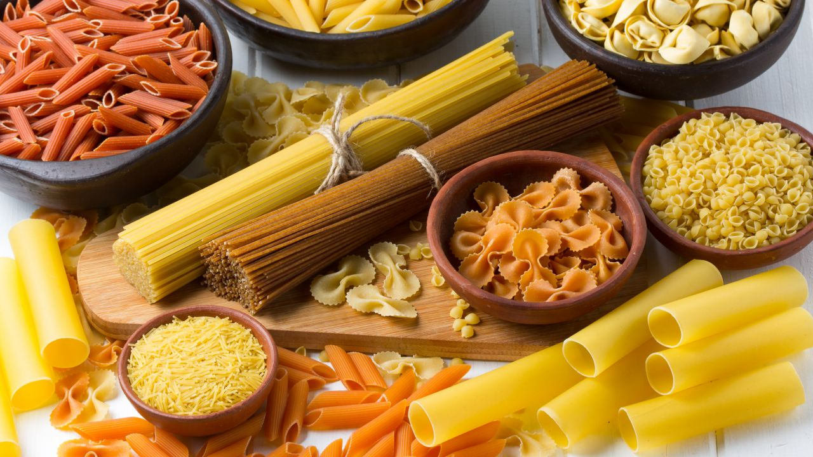
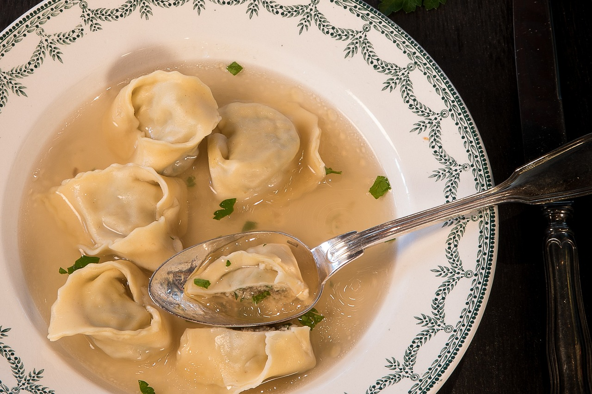

Las Mejores Pastas del Condado
Inicio
Sobre Nosotros
Productos
Contacto
Bienvenido a nuestra página.
Aquí encontrarás deliciosas pastas frescas para cocinar en casa.
Nuestros productos más vendidos
Cappellettis (bandeja)

Lasagna (unidad)
Ñoquis (500 gramos)